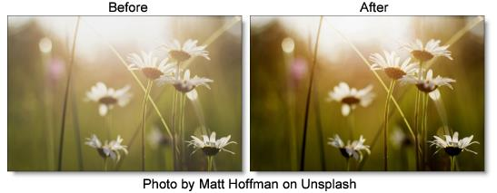

DeFog
Description
Using advanced deweathering algorithms, Defog restores clear day contrasts and colors of a scene taken in bad weather such as fog and mist. It is also successful in removing the effects of optical Fog and Diffusion filters.
Category
Stylize.
Controls
Presets
To select a preset, pick one from the Presets window.
Defog
Color
The Color parameter sets the color of the fog to be removed through the use of a standard color picker. The default color is white.
Vanishing Point
A vanishing point along the direction of increasing distance in the image is used to remove fog. By default, the vanishing point is set to the center of the screen. Essentially, the fog is removed in a radial pattern emanating from the vanishing point. So at the default center position, fog is removed in a circular pattern with a greater amount of fog being removed from the center while falling off at the edges. For instance, if your fog moves in the direction of top right to bottom left, set your vanishing point towards the top right corner and the fog removal will be more intense at the upper right and fall off at the bottom left. However, in most cases, the vanishing point can be left in the center of the screen and you will obtain acceptable results.
There is an on-screen control in the center of the image. By clicking and dragging the on-screen control or sliders, the position of the vanishing point can be adjusted.
Defog
Sets the amount of fog to be removed from the scene.
Min Depth
Controls how much fog is removed from the darker areas of the image.
Max Depth
Controls how much fog is removed from the brighter areas of the image.
Color Correct
Go to the
Color Correct filter to see how the Color Correct controls work.